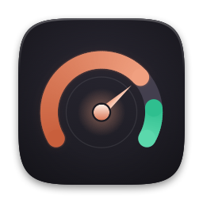
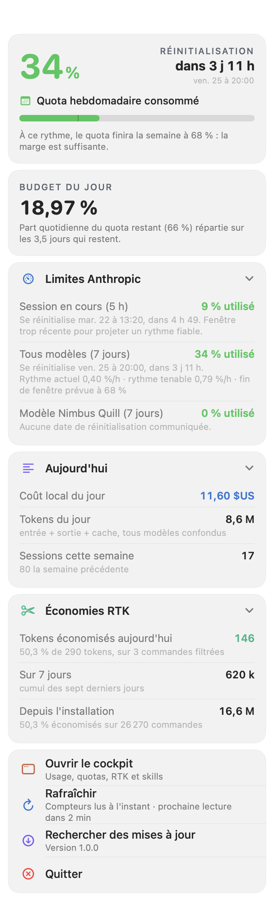
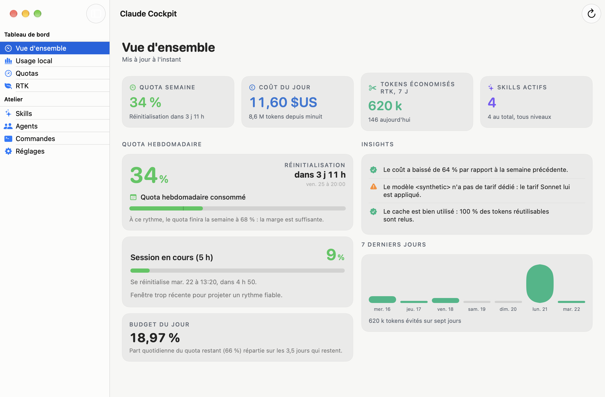
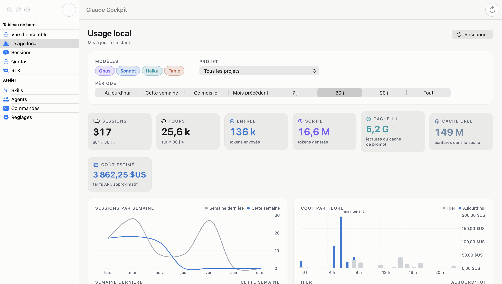
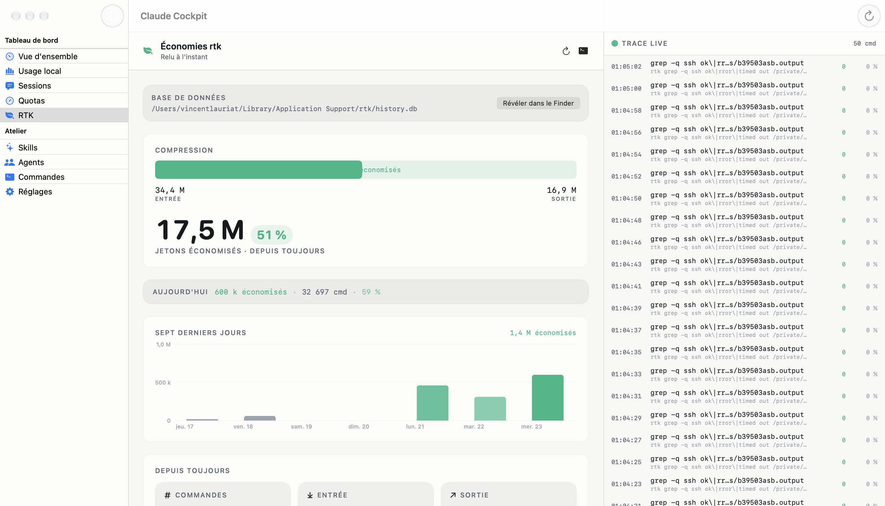
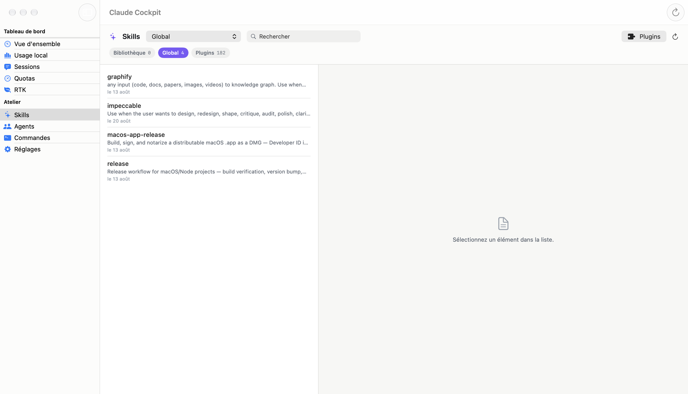

◉ macOS menu bar + window · MITBarre de menus + fenêtre macOS · MITmacOS 選單列 ＋ 視窗 · MITThe cockpit for Claude Code on macOS: Anthropic quotas and pace, local usage and cost, RTK token savings, and skills, agents and commands management — in one native app, as a menu bar panel and a full window. Le cockpit de Claude Code sur macOS : quotas et rythme Anthropic, usage et coût locaux, tokens économisés par RTK, et gestion des skills, agents et commandes — dans une seule app native, panneau de barre de menus et fenêtre complète. macOS 上的 Claude Code 座艙：Anthropic 配額與節奏、本機用量與成本、RTK 省下的 token，以及技能、代理與指令的管理——全在一個原生應用程式裡，選單列面板加上完整視窗。

The cockpitLe cockpit座艙
Four separate apps used to answer four halves of the same question. Claude Cockpit puts them on one dashboard: how much quota is left, what today actually cost, what your tooling saved, and what Claude Code is working with. Quatre apps distinctes répondaient jusqu'ici à quatre moitiés de la même question. Claude Cockpit les réunit sur un seul tableau de bord : combien de quota reste-t-il, ce que la journée a réellement coûté, ce que l'outillage a économisé, et avec quoi Claude Code travaille. 過去要四個獨立應用程式，才能回答同一個問題的四個面向。Claude Cockpit 把它們放進同一個儀表板：還剩多少配額、今天實際花了多少、工具省下了多少，以及 Claude Code 手上有哪些資源。
Anthropic's own 5-hour and weekly meters, plus where the week lands at the current pace. Les jauges de 5 h et hebdomadaires d'Anthropic, et où la semaine atterrit au rythme actuel. Anthropic 自家的 5 小時與每週計量，加上依目前節奏本週將落在哪裡。
Tokens and euros counted from your own transcripts, by model, project, agent and skill. Tokens et euros comptés sur vos propres transcripts, par modèle, projet, agent et skill. 直接從你自己的記錄計算 token 與金額，並依模型、專案、代理與技能分列。
The tokens rtk avoided today, over seven days and since install, command by command. Les tokens évités par rtk aujourd'hui, sur sept jours et depuis l'installation, commande par commande. rtk 今日、七日與自安裝以來省下的 token，逐一指令列出。
Three levels — Library, Global, Project — with copy, move, plugin import and automatic backups. Trois niveaux — Bibliothèque, Global, Projet — avec copie, déplacement, import de plugin et sauvegardes automatiques. 三個層級——資料庫、全域、專案——支援複製、移動、外掛匯入與自動備份。

01 · Quotas & pace01 · Quotas et rythme01 · 配額與節奏
Claude Cockpit reads the same usage endpoint Claude Code itself reads, so the percentages match /usage exactly. It then adds the one number Anthropic never gives you: whether today's pace makes it to the reset.
Claude Cockpit lit l'endpoint d'usage que Claude Code lit lui-même : les pourcentages correspondent exactement à /usage. Il y ajoute le chiffre qu'Anthropic ne donne jamais : si le rythme du jour tiendra jusqu'à la réinitialisation.
Claude Cockpit 讀取的，正是 Claude Code 自己讀取的用量端點，因此百分比與 /usage 完全一致。它再補上 Anthropic 從不提供的那個數字：今天的節奏能不能撐到重置。
02 · Local usage & cost02 · Usage et coût locaux02 · 本機用量與成本
Every Claude Code answer is written to a transcript in ~/.claude/projects. Claude Cockpit scans them incrementally and turns them into exact token counts and a priced cost — nothing estimated, nothing reconstructed.
Chaque réponse de Claude Code est écrite dans un transcript sous ~/.claude/projects. Claude Cockpit les parcourt de façon incrémentale et les transforme en comptage exact de tokens et en coût valorisé — rien d'estimé, rien de reconstruit.
Claude Code 的每則回覆都會寫入 ~/.claude/projects 下的記錄檔。Claude Cockpit 以增量方式掃描它們，轉換成精確的 token 計數與計價後的成本——不估算，也不重建。

03 · RTK savings03 · Économies RTK03 · RTK 節省
If rtk is installed, Claude Cockpit opens its history.db read-only and turns it into a savings dashboard. If it is not, the section simply explains how to install it — nothing is invented.
Si rtk est installé, Claude Cockpit ouvre son history.db en lecture seule et en fait un tableau de bord d'économies. Sinon, la section explique simplement comment l'installer — rien n'est inventé.
若已安裝 rtk，Claude Cockpit 會以唯讀方式開啟它的 history.db，並化為節省儀表板。若未安裝，該區塊只會說明如何安裝——絕不虛構數字。
git diff, vitest, grep — and which ones barely move the needle.
Commande par commande. Une liste classée en barres montrant quels filtres valent vraiment leur place — git diff, vitest, grep — et lesquels ne changent presque rien.
逐一指令檢視。以排序長條列出哪些過濾器真正發揮作用——git diff、vitest、grep——以及哪些幾乎沒有差別。
04 · Skills, agents & commands04 · Skills, agents et commandes04 · 技能、代理與指令
Skills, agents and commands live in a Library, in your global ~/.claude, and inside each project. Claude Cockpit shows the three levels side by side, renders the markdown, and moves files between them without a terminal.
Les skills, agents et commandes vivent dans une bibliothèque, dans votre ~/.claude global, et au sein de chaque projet. Claude Cockpit affiche les trois niveaux côte à côte, rend le markdown, et déplace les fichiers entre eux sans terminal.
技能、代理與指令分別存在資料庫、全域的 ~/.claude，以及各個專案之中。Claude Cockpit 並排顯示這三個層級、渲染 markdown，並在不開終端機的情況下搬移檔案。

How it worksComment ça marche運作方式
Claude Cockpit reads files that are already on your Mac. It makes exactly two kinds of network call, both of which you can name, and neither of which sends your data anywhere. Claude Cockpit lit des fichiers déjà présents sur votre Mac. Il ne fait que deux types d'appels réseau, tous deux nommables, et aucun n'envoie vos données où que ce soit. Claude Cockpit 讀取的，都是你 Mac 上已有的檔案。它只發出兩種網路請求，兩者都說得出名字，而且都不會把你的資料送往任何地方。
| SourceSource來源 | What happensCe qui se passe實際作為 |
|---|---|
| TranscriptsTranscripts記錄檔 | Read incrementally from ~/.claude/projects, from the byte offset reached last time. They are read, counted, and never sent anywhere.
Lus de façon incrémentale depuis ~/.claude/projects, à partir de l'offset atteint la fois précédente. Ils sont lus, comptés, et jamais envoyés nulle part.
從 ~/.claude/projects 依上次讀取的位移增量讀取。只被讀取與計數，絕不外傳。 |
| Anthropic quotasQuotas AnthropicAnthropic 配額 | One call to Anthropic's usage endpoint, with the Claude Code OAuth token already on your Mac. The token is kept in memory for the request, never written anywhere, never refreshed. The endpoint is called at most every three minutes. Un appel à l'endpoint d'usage d'Anthropic, avec le jeton OAuth de Claude Code déjà présent sur votre Mac. Le jeton est gardé en mémoire le temps de la requête, jamais écrit nulle part, jamais renouvelé. L'endpoint est appelé au plus toutes les trois minutes. 向 Anthropic 的用量端點發出一次請求，使用你 Mac 上既有的 Claude Code OAuth 權杖。權杖僅在請求期間存於記憶體，不寫入任何位置，也不更新。該端點最多每三分鐘呼叫一次。 |
| rtk databaseBase rtkrtk 資料庫 | Opened read-only. Claude Cockpit never writes to rtk's history.db, and the section disappears cleanly if rtk is not installed.
Ouverte en lecture seule. Claude Cockpit n'écrit jamais dans le history.db de rtk, et la section disparaît proprement si rtk n'est pas installé.
以唯讀方式開啟。Claude Cockpit 絕不寫入 rtk 的 history.db；若未安裝 rtk，該區塊會乾淨地隱藏。 |
| Skills filesFichiers de skills技能檔案 | The one place the app writes. Copies and moves stay inside your home directory, and every change copies the affected files to a timestamped backup first. Le seul endroit où l'app écrit. Les copies et déplacements restent dans votre dossier personnel, et chaque changement copie d'abord les fichiers concernés dans une sauvegarde horodatée. 這是應用程式唯一會寫入的地方。複製與移動都限制在你的家目錄內，且每次變更都會先建立帶時間戳記的備份。 |
| UpdatesMises à jour更新 | The second and last network call: the Sparkle appcast hosted on GitHub. No telemetry, no analytics, no third-party service, ever. Le second et dernier appel réseau : l'appcast Sparkle hébergé sur GitHub. Aucune télémétrie, aucune analytique, aucun service tiers, jamais. 第二個、也是最後一個網路請求：託管於 GitHub 的 Sparkle appcast。永遠沒有遙測、沒有分析、沒有第三方服務。 |
InstallInstallation安裝
The disk image is signed with a Developer ID and notarised by Apple, so it opens without a Gatekeeper warning. From there the app keeps itself up to date. L'image disque est signée avec un Developer ID et notarisée par Apple : elle s'ouvre sans avertissement Gatekeeper. Ensuite, l'app se tient à jour toute seule. 磁碟映像檔已使用 Developer ID 簽署並通過 Apple 公證，開啟時不會出現 Gatekeeper 警告。之後應用程式會自行保持更新。
Take the latest disk image from the GitHub releases page and open it. Prenez la dernière image disque sur la page des releases GitHub et ouvrez-la. 到 GitHub releases 頁面取得最新的磁碟映像檔並開啟。
The window shows the app and an Applications alias side by side — drag one onto the other. La fenêtre montre l'app et un alias Applications côte à côte — glissez l'un sur l'autre. 視窗中並排顯示應用程式與「應用程式」替身——把前者拖到後者上。
It opens straight away, with no Gatekeeper warning, and the quota percentage appears in the menu bar. Elle s'ouvre immédiatement, sans avertissement Gatekeeper, et le pourcentage de quota apparaît dans la barre de menus. 它會直接開啟，不會出現 Gatekeeper 警告，配額百分比隨即出現在選單列。
LineageFiliation淵源
Claude Cockpit is not a new idea — it is four proven ones under a single roof, rewritten as native Swift modules so the numbers finally sit next to each other. Claude Cockpit n'est pas une idée neuve — ce sont quatre idées éprouvées sous un même toit, réécrites en modules Swift natifs pour que les chiffres se retrouvent enfin côte à côte. Claude Cockpit 不是全新的構想——而是四個已驗證的構想住進同一個屋簷，改寫為原生 Swift 模組，讓這些數字終於並排在一起。
The local usage dashboard: transcripts, tokens, cost and the daily chart. Le tableau de bord d'usage local : transcripts, tokens, coût et graphique quotidien. 本機用量儀表板：記錄檔、token、成本與每日圖表。
vincentlauriat.github.io/ClaudeCodeUsageThe menu bar panel: Anthropic quotas, pace projection and daily budget. Le panneau de barre de menus : quotas Anthropic, projection de rythme et budget quotidien. 選單列面板：Anthropic 配額、節奏推算與每日預算。
vincentlauriat.github.io/ClaudeMenuThe savings dashboard read from rtk's own history database. Le tableau de bord d'économies lu dans la base d'historique de rtk. 直接讀取 rtk 歷史資料庫的節省儀表板。
vincentlauriat.github.io/RTKInfosThe three-level skills, agents and commands manager — rewritten natively in Swift. Le gestionnaire de skills, agents et commandes sur trois niveaux — réécrit nativement en Swift. 三層級的技能、代理與指令管理器——以 Swift 原生重寫。